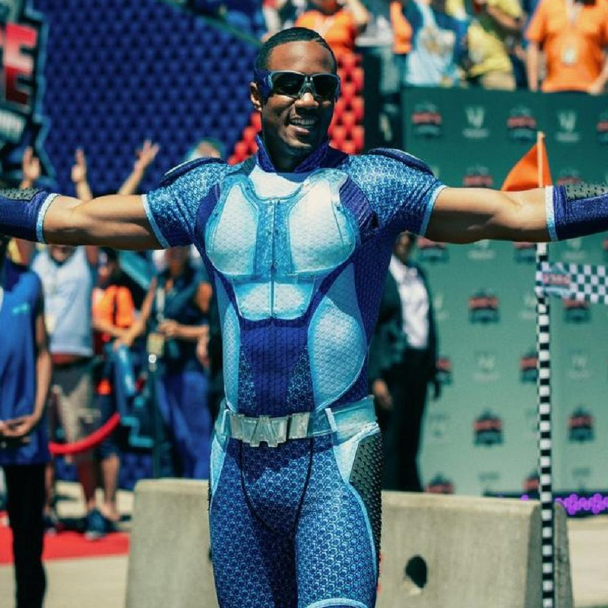

Audaz
Jessie T. Usher como Reggie Franklin / A-Train, un miembro velocista de los Siete. Está decidido a mantener su estatus como el velocista más rápido, lo que le ha llevado a convertirse en adicto al Compuesto V, Sin embargo, después de que este en un enfrentamiento con The Boys sufriera un ataque al corazón, es incapaz de mantener su velocidad y como consecuencia es expulsado de los Siete por el mismo Homelander.